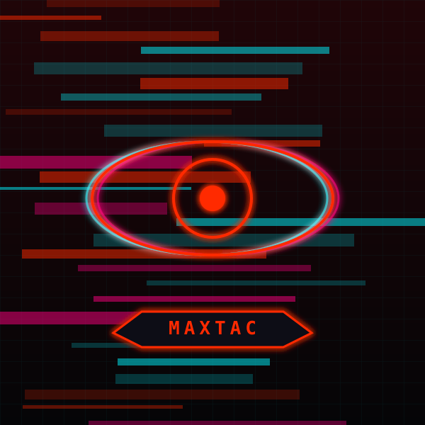

STŘEP KYUUBI · ??:??:??
Konec: Kyberpsychóza
Mačkáš spoušť znovu a znovu. Svět je pomalý, lidi jsou pomalí, všechno je pomalý.
Když se konečně zastavíš, nepoznáváš vlastní ruce. Jen chrom a krev. Nad ulicí krouží AV s nápisem MAXTAC.
Chrom má svoje meze. Tys je našel.
